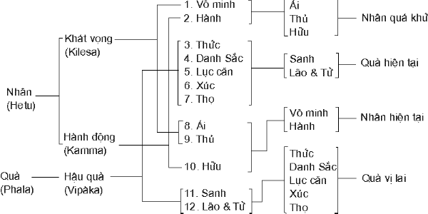

Con đường cũ xa xưa (Bát Chánh Ðạo) Phần 2Thập nhị nhân duyên Tại sao ta cứ mãi mãi kẹt trong những cây căm của vòng bánh xe? Hãy nhìn vào mười hai vòng khoen của Thập Nhị Nhân Duyên. Do vô minh (và ái dục ngủ ngầm bên trong) thúc đẩy, chúng ta hành động, tức tạo nghiệp, thiện hay bất thiện. Nghiệp quá khứ đưa đến quả hiện tại là thức, danh sắc, lục căn, xúc, thọ. Ðại khái có ba loại thọ là:
Hợp với cảm giác đau đớn (dukkha) và sung sướng (sukha) về vật chất thì có tất cả năm loại thọ. Thọ vô ký, không vui sướng, hạnh phúc, cũng không đau đớn, ưu phiền còn có tên upekkhà mà ta không nên lẫn lộn với tâm xả, bình thản trong Tứ vô lượng tâm. Trong thực tế khi tinh thần được hạnh phúc thì vật chất cũng vui thích và trái lại, khi thể xác được thích thú thì tinh thần cũng khoan khoái. Vậy, ta có thể gom hai cảm giác vui thích tinh thần và vật chất làm một, gọi chung là sukha. Cùng một thế ấy, ta gom hai cảm giác đau khổ tinh thần và vật chất, làm một và gọi chung là dukkha. Ðến đây thọ, hay cảm giác còn ba: Sukha, cảm giác vui thích tinh thần và vật chất. Dukkha, đau khổ tinh thần và vật chất và Upekkhà cảm giác vô ký. Trong ba cảm giác này Upekkhà rất yếu ớt, hầu như không có. Còn lại hai loại thọ: Thọ Lạc và Thọ Khổ. Do thọ, ái phát sanh vì vô minh vẫn luôn luôn tiềm tàng ngủ ngầm. Ái ở đây có thể là ưa thích hay ghét bỏ -- vì ghét chỉ là hình thức tiêu cực của ưa thích, là ưa ở một mức độ nào. Khi ta nói tôi "ghét tiếng ồn" có nghĩa là tôi "ưa không có tiếng ồn". Do ái phát sanh thủ, do thủ phát sanh hữu và do hữu có sanh, lão, bệnh, tử, ưu phiền, sầu muộn v.v... Vòng lẩn quẩn cứ thế trở đi trở lại triền miên, mãi mãi, từ vô lượng kiếp. Nơi đây ta thấy có ba thì: Do vô minh và hành ở quá khứ -- trong đó tiềm tàng ngủ ngầm ái, thủ và hữu -- ta hành động bằng thân, khẩu, ý. Dầu hành động của ta thiện hay bất thiện, đều tạo nghiệp vì vẫn còn nằm trong vô minh. Năm nhân quá khứ -- vô minh, hành, ái, thủ và hữu -- tạo duyên cho năm quả trổ sanh ở hiện tại là thức, danh sắc, lục căn, xúc thọ. Cùng thế ấy, ái, thủ, hữu, vô minh và hành trong hiện tại tạo duyên cho năm quả, thức, danh sắc, lục căn, xúc, thọ ở tương lai. Vị lai trở thành hiện tại và hiện tại trở thành quá khứ, bánh xe đời sống liên tục lăn tròn trên con đường thời gian vô tận. Thập nhị nhân duyên

Ðể giải đáp câu hỏi của Upatissa, về sau là Ngài Sàriputta (Xá Lợi Phất), "Giáo lý của vị Tôn sư ra sao? Vị Tôn sư của Ngài tuyên ngôn như thế nào?" Ðại Ðức Assaji (A Tư Ðà) đúc kết trọn vẹn giáo lý của Ðức Thế Tôn như sau:
Toàn thể sự vật trong thế gian nằm dưới sự chi phối của định luật nhân quả, hành động và hậu quả của hành động. Phật giáo dạy rằng tất cả pháp hữu vi đều khởi sanh, nhất thời tồn tại và chấm dứt. Trong bài kinh Chuyển Pháp Luân, khi bắt đầu giảng Tứ Diệu Ðế, Ðức Phật dạy rằng: "Sanh là Khổ". Nói vậy, không phải chỉ nghĩ đến cảnh mang nặng đẻ đau của bà mẹ và cảnh bị nhốt nằm trong cái bọc của đứa bé mà sâu xa thâm diệu hơn, nên nhận thức rằng chính cái sanh là đầu dây mối nhợ, là khởi duyên tạo cho đau khổ bám vào. Nếu không sanh tức không có sống. Không sống tức không có khổ. Vì lẽ ấy mục tiêu cứu cánh của người Phật tử là thoát ra khỏi vòng sanh tử triền miên tiếp diễn. Nhưng, bản chất của chúng sanh là cố bám vào sự sống. Ái dục trong hình thức ham sống, là một năng lực vô cùng hùng mạnh, luôn luôn tiềm tàng ngủ ngầm bên trong mỗi người. Ái dục là nguyên nhân sanh đau khổ và sanh là cơ hội tạo duyên cho đau khổ phát khởi. Có sanh tức có già, có bệnh v.v... có đau khổ. Vừa lúc bình minh sau đêm Ngài thành đạt Ðạo quả Vô Thượng Chánh Ðẳng Chánh Giác, Ðức Phật đọc lên bài kệ hoan hỷ:
Ðức Thế Tôn nhìn nhận cuộc đi thênh thang bất định trong nhiều kiếp sống đầy đau khổ và phiền lụy. Ngài phải đi bất định và do đó, phải chịu khổ đau, bởi vì chưa tìm ra người thợ đã xây dựng cái nhà, tức nguyên nhân tạo nên cơ thể vật chất này. Trong kiếp sống cuối cùng, giữa khung cảnh cô đơn tịch mịch của rừng thiêng, lúc đi sâu vào công trình hành thiền mà Ngài đã dày công trau giồi từ trong quá khứ xa xôi, trải qua cuộc hành trình bất định, Ngài khám phá ra anh thợ cất nhà hằng mong mỏi muốn biết. Anh thợ này không phải ở ngoài mà sâu kín ẩn tiềm bên trong Ngài. Ðó là Ái Dục, sự tự tạo, một thành phần tinh thần luôn luôn ngủ ngầm bên trong tất cả mọi người. Như vậy, ái dục trong quá khứ làm nguyên nhân đưa đẩy tôi đến đây. Nếu vẫn còn lơ đễnh để cho cuộc sống buông lung lôi cuốn, ái dục trong hiện tại sẽ là nguyên nhân đưa đẩy tôi vào một cuộc sống mới, với những đau khổ mới. Nhưng trong hiện tại, và chỉ trong hiện tại, tôi có thể khắc phục ái dục để thoát ra khỏi những hình thức đau khổ của những kiếp sanh tồn này.
Ái dục là gì? Từ vô lượng kiếp ta mãi sống trong ảo mộng. Những suy tư lời nói và hành động của chúng ta, dầu thiện hay bất thiện, đều nằm trong vô minh. Vô minh là không nhận thức thực tướng của vạn pháp hay không thấu đáo hiểu biết chân tướng của chính mình. Chính màn vô minh, như lớp mây mờ bao phủ, che mất mọi hiểu biết chân chính tức là Chánh Kiến. Vô minh là nguyên nhân chánh làm động lực thúc đẩy, chuyển động "bánh xe đời sống". Ðức Phật dạy:
"Hành" phát sanh tùy thuộc nơi vô minh. Tất cả những tư tưởng, lời nói và việc làm , dầu thiện hay bất thiện, đều là hành. Mỗi hành động bằng thân, khẩu hay ý của chúng ta, trực tiếp bắt nguồn từ vô minh và ái dục, hay vô minh và ái dục gián tiếp thúc đẩy, đều nhất định phải tạo nghiệp và có khuynh hướng đưa đi tái sanh, kéo dài thêm cuộc hành trình xa xôi của vòng luân h ồi. Ái Dục là gì? Phạn Ngữ mà thường được phiên dịch là "Ái" hay "Ái Dục" là Tanha (Bắc Phạn là trushna). Ái dục, Tanha, bao gồm tất cả những hình thức thèm khát, tham ái, khát vọng, ước mong , dục vong, ham muốn, nóng lòng, bám níu, luyến ái. Các danh từ trên diễn đạt những sắc thái khác nhau của Ái, nhưng không có chữ nào nói lên một cách trọn vẹn ý nghĩa của phạn ngữ Tanha. Tanha luôn luôn bao hàm một ý niệm vị kỷ. Con người chấp giả làm thiệt, khư khư bám vào ngũ uẩn vô thường mà cho đó là "Ta", một cái "Ta" trường tồn không biến đổi, rồi ham muốn, khát khao v.v... lấy cái ta làm trung tâm của mọi sự vật và cố đem vào càng nhiều càng tốt và bám lấy càng chặt càng hay. Vì lẽ ấy khi chuyển ngữ thành ham muốn, ước mong, v.v... ta nên hiểu rằng tanha chỉ nằm trong phần xấu của những danh từ này mà thôi. Thí dụ như ham muốn. Ta cũng có thể ham muốn điều xấu xa mà cũng có thể ham muốn những việc tốt đẹp, đáng ngợi khen và khuyến khích, như muốn phục vụ, muốn bố thí, muốn có đời sống đạo đức v.v... Tanha chỉ diễn đạt phần vị kỷ xấu xa của sự ham muốn, sự khát khao, lòng ước muốn cho chính mình, sự luyến ái, bám níu giữ cho cái "Ta". Theo Vi Diệu Pháp (Abhidhamma) có ba loại ái dục:
Bhava tanha có khi được giải thích là sự luyến ái đeo níu theo Sắc Giới, và Vibhava tanha là sự luyến ái đeo níu trong Vô Sắc Giới. Về điểm này Ðại Ðức Piyadassi viết trong quyển "The Buddha's Ancient Path": "Kẻ thù của toàn thể nhân loại là ái dục, ham muốn, luyến ái, bám níu, khát vọng và xuyên qua đó, tất cả những điều bất hạnh đến với chúng sanh. Ðây không phải chỉ lòng ham muốn hay luyến ái duyên theo nhục dục ngũ trần, tiền của, tài sản và tham vọng đánh bại, lấn lướt kẻ khác hay xâm lăng những quốc gia khác, mà cũng là sự cố chấp, khư khư dính mắc trong những lý tưởng, ý niệm, quan kiến và tín ngưỡng (dhamma tanha) thường dẫn đến phỉ báng và hoại diệt và đem lại đau khổ không thể tả đến toàn thể quốc gia, hay trong thực tế, toàn thể thế gian."
Tai hại của ái dục Chính yếu tố "vị kỷ" trong ái dục, tanha, gây bao nhiêu tai hại cho con người. Ái dục không bao giờ được hoàn toàn thỏa mãn. Khi một điều mong muốn được thành tựu thì lại có ước vọng mới. Con người luôn luôn chạy theo những thích thú tạm bợ mới, cố rượt theo để bám lấy những ảo ảnh, để chụp cho được cái mà thật sự chỉ là những hình bóng ảo huyền và như thế, con người luôn luôn châm nhiên liệu, dưỡng nuôi và bảo trì ngọn lửa của kiếp sinh tồn. Chính lòng tham muốn ích kỷ, tâm luyến ái vô độ lượng, vô trật tự và sự bám níu đam mê vào những sự vật trên thế gian đã lôi cuốn và đẩy đưa con người trôi giạt đó đây trong đại dương của đời sống. Ðó là tác động của ái dục ở trong con người dưỡng nuôi nó. Còn tác động của nó ở bên ngoài người ôm ấp nó, ở người khác thì sao? Ðức Phật dạy:
Trong bài "The Significane Of The Four Noble Truths", đạo hữu Gunaratne viết: "Ái dục là một thúc đẩy hùng mạnh, một thúc đẩy nguy hiểm, tai hại. Ái dục là nguyên nhân hầu hết những tệ hại trên đời. Hầu hết những xáo trộn chính trị trong nhiều quốc gia, những vấn đề xã hội và kinh tế rất phiền phức chỉ có thể giải thích được bằng ảnh hưởng nguy hại của tanha. Ái dục vị kỷ là động cơ chính yếu đưa đến hầu hết những cuộc tranh chấp và thúc đẩy mọi cố gắng của con ngừơi mê muội. "... Ðôi khi trong ái dục, sự biểu hiện của lòng vị kỷ có phần lộ liễu, hiển nhiên. Lắm khi rất tế nhị. "... Tình thương không mấy khi không đượm nhuần tính chất vị kỷ. Ðó là một thứ tình thương thiết tha mong muốn được nhận ra và đòi hỏi được đáp lại. Tóm tắt, đó là tự thương mình, là tình thương của mình đối với mình. Trong phần lớn các trường hợp , người này thương người kia là để tự thương mình nhiều hơn, là bởi vì mình thiết tha mong muốn tự cho mình cái vui được thương người và cái vui được người thương trở lại. Như vậy, tiềm tàng dính liền theo tình thương người có một ẩn ý tự thỏa mãn và tình thương kẻ khác chỉ là tình thương mình trá hình."
Ðể khuyên dạy một vị Tỳ Khưu vô lễ, mặc dầu thông suốt Giáo Pháp nhưng lòng còn chứa đầy ái dục, và kiêu mạn khinh rẻ các vị khác Ðức Phật thốt ra Phật ngôn:
Một lần khác, trong lúc đi dài theo đường Ðức Phật trông thấy một con heo nái. Ngài mỉm cười. Ðức Ananda nhìn thấy một vừng hào quang phát tủa ra từ miệng Ðức Phật liền bạch hỏi, "Bạch hóa Ðức Thế Tôn, vì lý do nào Ngài mỉm cười?" (1), Ðức Phật trả lời: " Này Ananda, nhìn con heo nái kia, trong thời kỳ Ðức Phật Kakusandha heo nái kia là một con gà mái, thường sống quanh quẩn trong chùa. "Hàng ngày gà tìm thức ăn bên ngoài chánh điện trong khi một nhóm Tỳ Khưu tu thiền đọc lên những bài kinh về thiền minh sát. Chỉ nhờ nghe được âm thanh mà không hiểu ý nghĩa lời kinh nên sau khi chết, gà tái sanh vào hoàng cung làm công chúa có tên là Ubbari. "Ngày nọ Công Chúa Ubbari nhìn thấy một đống giòi. Ngay lúc ấy bà liền gom tâm, quán niệm về đống giòi và đắc Sơ Thiền. Trong phần còn lại của kiếp sống ấy bà sống trong Sơ Thiền và, do đó sau khi qua đời, tái sanh vào cảnh Trời. Lúc tuổi thọ ở cảnh Trời chấm dứt, nghiệp lực tốt đã hết. Vì trong một tiền kiếp xa xôi bà mê say đắm chìm trong ái dục, do hậu quả của nhiều kiếp xấu đã gieo nay trổ sanh, bà tái sanh trở lại làm heo nái. Khi nghe Ðức Phật thuật lại lý lịch con heo nái như vậy chư Tăng lấy làm xúc động, nhận thức rằng cho đến khi thành đạt Ðạo quả Tu Ðà Hườn cuộc thênh thang trong vòng luân hồi quả là bất định. Nhân cơ hội Ðức Phật truyền dạy:
Ngài giảng về hậu quả tai hại của ái dục như sau:
ảo kiến Từ xa xôi trong quá khứ ta bị màn vô minh che lấp và đám mây mù si mê bao phủ làm cho tâm không thấy được Chân Lý của vạn pháp. Thấy bóng ta tưởng hình, thấy ảo tưởng thực, thấy những giọt nước kế tiếp trôi chảy gọi là con sông, thấy những hột cát chồng chất trải dài xem đó là bãi biển, một thực thể đơn thuần nguyên vẹn, thấy những tế bào, những nguyên tử, những điện tử giả hợp cho đó là con người, người nam hay người nữ, anh, chị hay tôi, rồi chấp thủ vào cái "Tôi" ấy. Khi người Phật tử quán trạch bản thân mình một cách sâu sắc và rốt ráo thì nhận thức rằng con người là sự cấu hợp của hai thành phần, vật chất và tâm linh, sắc và danh. Phần vật chất, thân hay sắc, không phải là một thực thể đơn thuần, nguyên vẹn, không biến đổi mà là một tiến trình luôn luôn tiếp diễn, luôn luôn trở thành một cái gì khác. Phần tâm linh bao gồm thọ, tửơng , hành, thức, chuyển biến càng mau lẹ hơn. Bốn loại hiện tượng tâm linh -- thọ, tưởng, hành, thức -- hợp với một hiện tượng vật lý, sắc, là sự kết hợp vô cùng phức tạp của năm thành phần cấu tạo chúng sanh. Mỗi cá nhân đều do năm uẩn cấu thành. Trong khi những thành phần của năm uẩn ấy luôn luôn biến đổi thì có cách nào sự tổng hợp của năm uẩn, tức con người, lại không biến đổi từng khoảnh khắc. Trong hai khoảnh khắc kế tiếp không thể có một người nguyên vẹn không đổi thay bởi vì trong người ấy có thành phần vật chất lẫn thành phần tâm linh đều không ngừng biến đổi. Khi tôi viết trên gĩay hai chữ "tôi viết" thì người viết chữ "viết" đã không còn là người viết chữ "tôi", vì trong thời gian giữa lúc tôi viết chữ đầu và chữ sau bao nhiêu thay đổi, cả vật chất lẫn tinh thần, đã xảy diễn bên tôi. Ðức Phật dạy, "Na ca so, na ca anno", không tuyệt đối là một người, cũng không hẳn là hai người hoàn toàn khác biệt vì cả hai đều nằm trong một tiến trình sống, một dòng sinh tồn. Chỉ có một luồng sống, một diễn tiến của đời sống hay một sự liên tục. Tuy nhiên, sự liên tục đổi thay này đã xảy ra nhanh chóng đến độ ta không thể phân biệt một cách hiển nhiên. Chính hai yếu tố liên tục và nhanh chóng đã làm cho ta lầm tưởng có một thực thể đơn thuần không biến đổi. Một cây nhang cháy trong đêm tối chỉ là một đốm sáng. Khi cây nhang được quay nhanh theo một vòng tròn thì ta thấy một vòng ánh sáng. Trong thực tế không có vòng tròn ánh sáng mà chỉ có một điểm sáng di chuyển liên tục và nhanh chóng theo vòng tròn. Xem chớp bóng, ta thấy cảnh vật di động trên màn ảnh, nhưng thực ra chỉ có những bức ảnh riêng biệt liên tục tiếp diễn theo một tốc độ nào và cho ta cảm giác đang nhìn một loại hoạt cảnh liên tục. Cùng thế ấy, vì sự biến đổi liên tục của những thành phần ngũ uẩn nhanh chóng nên ta có cảm tưởng như có những thực thể đơn thuần, nguyên vẹn, không biến đổi, gọi là người, anh, tôi, thú v.v... Thực ra toàn thể tiến trình của những hiện tượng tâm vật lý ấy luôn luôn trở thành rồi tan rã, sanh rồi diệt. Không thể có cái gì bền vững thường còn mà ta có thể gọi là "Ta" hay "Của Ta", hay một linh hồn trừơng cửu, một bản ngã vĩnh tồn. Ðức Phật dạy:
Nhưng vì mãi bị màn vô minh che lấp, người đời xem đó là "Ta", là tự ngã của ta. Một câu chuyện thuật rằng có người kia nhà nghèo, sống với đứa con nhỏ trong một túp lều tranh ở ngoại ô thành phố. Hôm nọ anh đi làm, để con ở lại nhà. Một tên gian manh, thừa lúc vắng người lớn vào nhà định vơ vét tài vật. Nhưng khi lục soát cùng khắp mà không thấy gì đáng giá thì anh ta tức giận, nổi lửa đốt nhà và dắt luôn đứa bé theo. Khi đi làm về người cha nghèo thấy nhà cửa chỉ còn là một đống tro, còn con thì đâu mất. Tin chắc rằng con mình đã bị chết thiêu trong đám hỏa hoạn, anh moi đống tro tàn để tìm những gì còn lại của đứa con yêu qúy và bỏ vào bị. Từ đó anh luôn luôn mang theo mình cái bị và trum trủm giữ gìn như một bảo vật, lúc ngủ cũng để bên mình và hết lòng thiết tha trìu mến. Ngày tháng trôi qua. Ðứa bé lớn lên, tìm cách trốn thoát tên gian manh, tìm về với cha. Người cha đang ở trong nhà, thấy có chàng thanh niên đến và tự giới thiệu là con anh thì lấy làm ngạc nhiên, quả quyết phủ nhận: " Em nào phải là con tôi, tôi chỉ có một con". Rồi anh chỉ vào bị khẳng định, đây là con tôi. Anh nhất quyết như vậy. Không làm sao giải thích cho anh biết rằng đó chỉ là tưởng tượng , kỳ thực tro kia không phải là con anh. Nghe qua câu chuyện ta có thể nghĩ rằng anh kia quá dại dột, quả thật là mê lầm. Ðúng vậy. Nhưng bất hạnh thay! Hầu hết chúng ta là như vậy -- vì thế chúng ta còn quanh quẩn ở đây. Chúng ta mãi mãi ở trong ảo mộng mà cho đó là thực tế. Chúng ta sống với những quy ước và những khái niệm và quả quyết rắng đây là "Ta", kia là cha, là mẹ, là anh, chị cô, bác, họ hàng thân thuộc "Của Ta", nhà cửa "Của Ta", xe cộ "Của Ta" v.v... trong khi
Chắc mỗi người trong chúng ta còn nhớ rằng lúc thiếu thời, vào một buổi chiều nào đó, chúng ta nhìn lên trời thấy một cái móng (cầu vồng) màu sắc rực rỡ, đóng trên một vừng mây. Lúc ấy chúng ta rất cảm kích, tửơng chừng như mình có thể đến gần và sờ nắm được cái móng, vì nó rành rành còn hơn rặng cây mờ mờ trong đám khoí ở phiá sau . Trên thực tế, nó không có gì là thực chất mà chỉ là những làn ánh sáng chiếu suyên qua hằng triệu, hằng tỷ tỷ giọt nước ly ty, vởn vơ trong không gian. Từ thuở ấy đến nay còn biết bao nhiêu lần khác, trong bao nhiêu trường hợp khác nhau ta lầm tưởng giả là thật. Hằng ngày, vào buổi sáng ta thấy mặt trời lú lên từ chân trời ở hướng Ðông, và buổi chiều sụp xuống ở hướng Tây. Một cách quy ước ta nói rằng mặt trời mọc buổi sáng và lặn buổi chiều. Thực ra, và ta hiểu rõ như vậy, không có mặt trời mọc và mặt trời lặn mà chỉ có quả địa cầu, vừa xoay vần theo một trục vừa vận chuyển quanh mặt trời.
Thoát ra khỏi vòng sanh tử Tiến trình nhân và quả diễn tiến vô cùng tận. Cây sanh trái, trái sanh cây, xem hình như không bao giờ chấm dứt. Nhưng nếu ta biết, đập hột đi ắt trái không còn sanh cây và như thế chấm dứt luồng diễn tiến. Quả phát sanh vì nhân. Nếu không có nhân tức không có quả. Nhân diệt tức quả diệt. Hãy trở lại nhìn vào bánh xe của đời sống, cũng được gọi là pháp Tùy Thuộc Phát Sanh (Paticca samuppada), hay Thập Nhị Duyên Khởi hay Thập Nhị Nhân Duyên. Từ vô thủy ta bị trói buộc, dính mắc trong vòng lẩn quẩn của Thập Nhị Nhân Duyên. Nếu để nó trôi chảy theo dòng diễn tiến tự nhiên mà không có sự cố gắng mà để khắc phục và vượt thoát ra khỏi, thì dưới sự chi phối của tham ái, sân hận và si mê cố hữu của con người, nó sẽ lôi cuốn ta mãi triền miên vô cùng tận. Phải đập bể cái hột và chấm dứt vòng luân hồi. Câu hỏi được nêu lên là: Phải thoát ra ở giai đoạn nào ở mười hai vòng khoen? Hai vòng khoen đầu, Vô Minh và Hành, nằm trong thời quá khứ. quá khứ đã qua, nghiệp đã được tạo, ta không thể đi ngược dòng thời gian để sửa sai. Vậy, không thể làm gì. Hai vòng khoen cuối cùng, Sanh và Lão Tử, thuộc về tương lai. Tương lai chưa đến. Ta cũng không thể đi trước thời gian để sắp xếp sự vật. Tám vòng khoen còn lại nằm trong thời hiện tại. Năm trong tám vòng ấy: Thức, Danh sắc, Lục căn, Xúc, Thọ là quả, trổ sanh trong hiện tại do nghiệp đã tạo ở quá khứ. Nhân đã gieo trong quá khứ ắt quả dĩ nhiên phải trổ, ta không thể sửa đổi. Cũng không thể làm gì. Còn lại ba là Ái, Thủ, Hữu. Ðây là phản ứng của ta đối với những quả ấy. Phản ứng này rất quan trọng vì sẽ làm nhân tạo quả trong tương lai. Ðó là yếu tố then chốt trên con đường. Nơi đây ta có thể bị lôi cuốn mãi mãi đi vòng quanh mà cũng tại nơi đây ta có thể mở đường vượt thoát ra khỏi vòng luân hồi. Nếu trong khi thọ, ta ái -- ưa thích hay ghét bỏ -- tức có luyến ái, đeo níu, bám chặt (thủ) rồi tiếp nối vòng quanh. Nếu hiểu biết bản chất thật sự của thọ là vô thường, khổ, vô ngã ta sẽ không chấp thủ mà buông bỏ. Tức nhiên không có ái. Không ái tức không thủ, không hữu và đó là đập nát cái hột, chấm dứt luân hồi. Trong các bài kinh giảng về thọ trong bộ Tạp A Hàm (Vedana-samyutta) Ðức Phật hỏi: " Này chư Tỳ Khưu, một người thế gian không có học Giáo Pháp, kinh nghiệm thọ lạc, kinh nghiệm thọ khổ, và kinh nghiệm thọ vô ký. Một Thánh Ðệ tử thông suốt Giáo Pháp, cũng kinh nghiệm thọ lạc, kinh nghiệm thọ khổ và kinh nghiệm thọ vô ký cùng một thế. Vậy thì có gì khác biệt, có điểm nào dị đồng giữa hai người? "Khi người thế gian bị đau đớn, nhức nhối thì lo âu và phiền muộn, người ấy ta thán, đấm ngực khóc than và thất vọng. Như thế anh ta kinh nghiệm hai loại thọ, thọ khổ ở thân và thọ ưu ở tâm. Cũng như đã bị một mũi tên rồi lại bị một mũi tên thứ nhì, anh đau khổ cả thân lẫn tâm. "Bị thương đau nhức, người ấy phẫn uất, bất mãn và có khuynh hướng tìm cách khỏa lấp. Trong sự đau khổ người ấy đi tìm lạc thú ở đời. Tại sao người ấy hành động như vậy? Này chư Tỳ Khưu, người thế gian không có học Giáo Pháp, không biết phải làm thế nào để thoát ra khỏi sự đau khổ của mình, ngoại trừ tìm cách hưởng thụ dục lạc để khỏa lấp. Bên trong con người thích thú hưởng thọ dục lạc thì khuynh hướng khát khao nhục dục ngũ trần ngày càng sâu đậm. Người ấy không biết đúng sự thật bản chất sanh diệt của thọ, không biết hậu quả tai hại của lòng ham muốn thỏa mãn dục vọng mà cũng không biết làm cách nào để thoát ra. Bên trong con người kém hiểu biết như thế khuynh hướng si mê đối với thọ vô ký càng sâu đậm. Khi thọ lạc, thọ khổ hay thọ vô ký người như thế ấy tự trói buộc, xiết chặt mình vào đời sống. Này chư Tỳ Khưu, người như thế ấỵ bi dính mắc và mãi mãi lăn trôi trong vòng sanh, lão, bệnh, tử, lo âu, sầu muộn, ta thán, khổ đau và tuyệt vọng. "Trong trừơng hợp của bậc Thánh Ðệ Tử thông suốt Giáo Pháp, này chư Tỳ Khưu, khi bị đau đơn nhức nhối vị ấy không lo âu, phiền muộn và ta thán, không đấm ngực khóc than và thất vọng. Người ấy chỉ kinh nghiệm một loại thọ, đau đớn về thể xác, nhưng tâm vẫn bình thản. Cũng giống như người bị mũi tên, không bị mũi tên thứ nhì. Cũng dường thế ấy, bậc Thánh Ðệ Tử thông suốt Giáo Pháp sẽ không lo âu sầu muộn và ta thán, sẽ không đấm ngực khóc than và thất vọng. "Bị thương đau nhức người ấy không phẫn uất bất mãn, do đó không có khuynh hướng tìm cách kháng cự. Trong sự đau khổ người ấy không tìm thọ hưởng lạc thú trần gian để khỏa lấp. "Tại sao? --Vì đã thông suốt Giáo Pháp bậc Thánh Ðệ Tử hiểu biết làm thế nào để thoát khổ, ngoài phương cách thỏa mãn dục vọng. Bên trong người không tìm thỏa mãn dục vọng không còn khuynh hướng đi tìm thích thú trong dục lac. Người ấy thấu đạt chân chánh bản chất sanh diệt của thọ, mối hiểm họa của lòng ham muốn dục lạc và cũng hiểu biết con đường thoát ra khỏi những thọ cảm ấy. Bên trong người hiểu biết như thế ấy không còn khuynh hướng si mê đối với thọ vô ký. Khi thọ lạc, thọ khổ hay thọ vô ký người ấy không bị trói buộc. Người như thế ấy, này chư Tỳ Khưu, được gọi là bậc Thánh Ðệ Tử thông suốt Giáo Pháp, là người không tự trói buộc mình vào và không lăn trôi theo vòng sanh, lão, bệnh, tử, lo âu, sầu muộn, ta thán, khổ đau và thất vọng. "Ðó, này chư Tỳ Khưu, là sự khác biệt, là điểm dị dồng giữa người thế gian không biết Giáo Pháp và vị Thánh Ðệ Tử thông suốt Giáo Pháp ." Một lần khác Ðức Phật dạy: "Này chư Tỳ Khưu, trên không trung có nhiều luồng gió thổi: gió từ hướng Ðông, từ hướng Tây, gió từ hướng Bắc, hướng Nam, gió co mang theo buị bặm và gió không bụi, gió nóng, gió lạnh, gió giông bão, có gió lượng nhỏ thổi, có gió lượng lớn thổi. Cũng vậy, này chư Tỳ Khưu, trong thân này có nhiều loại thọ sai biệt khởi lên: Thọ lạc phát sanh, thọ khổ phát sanh và thọ vô ký phát sanh. "Nhưng vị Tỳ Khưu nhiệt thành tin tấn và không dễ duôi lơ đễnh buông lung, luôn luôn giác tỉnh chú niệm và hiểu biết rõ ràng bản chất của mỗi loại thọ. Thấu đạt từng thọ cảm, vị ấy sẽ tận diệt ô nhiễm trong chính kiếp sống này. Ðã thuần thục hiểu biết và vững vàng trong đường lối của Giáo Pháp, khi kiếp sống này chấm dứt, cơ thể rã tan, vị Tỳ Khưu ấy vượt lên khỏi mọi hình thức khái niệm của thế gian." Một cách chính xác, chính thọ (vedanã) cảm giác một đối tượng, khi đối tượng ấy tiếp xúc với Lục căn. Thọ cảm nhận quả lành hay quả dữ của những hành động trong hiện tại hay trong quá khứ. Chính tâm sở tác ý (cetanã), tức ý nằm bên trong hành động, là "người gieo nghiệp" và tâm sở thọ là "người gặt hái quả". Ngoài hai tâm sở tác ý và thọ không có một linh hồn hay một bản ngã, một cái "Ta" nào tạo nghiệp hay thọ quả. Khi thấy một hình sắc, nghe một âm thanh, ngửi một mùi, nếm một vị, sờ chạm một vật hay nảy sanh một ý nghĩ con người có một cảm giác, một loại thọ. Nhưng ta không thể nói rằng tất cả mọi chúng sanh đều cảm một loại thọ giống nhau trứơc một đối tượng giống nhau. Một đối tượng có thể tạo thọ lạc cho người này mà gây thọ khổ cho người kia và thọ vô ký cho một người khác nữa, vì khuynh hướng tâm tánh trong luồng nghiệp (anusaya) của mỗi người mỗi khác. Một ly rượu mạnh có thể là nguồn khoái lạc cho một người và là độc dược cho người khác. Lại nữa, cùng một người cùng một đối tượng, ở hai thời kỳ khác nhau hay trong những hoàn cảnh khác nhau thọ cũng có thể khác nhau. "Người buồn cảnh có vui đâu bao giờ?". Chúng ta chấp những yếu tố của ngũ uẩn luôn luôn biến đổi là "Ta". Ðó là nguồn gốc của tất cả những phiền phúc, những lo âu, những quấy nhiễu, những điều bất hạnh, những hoàn cảnh khổ đau. Tại sao? * Khi cái được gọi là "Ta" bám níu, duyên theo người hay vật mà nó ưa thích, tất có thân yêu, luyến ái hay trìu mến.
* Khi cái "Ta" bất mãn với người hay vật không ưa thích tất cả sự ghét bỏ, phiền giận hay hận thù.
* Khi cái "Ta" thất bại, tất có sự đau khổ, âu sầu, phiền muộn, hối hận và tuyệt vọng sâu xa, có thể đưa đến cảnh tự quyên sinh hay gây tổn hại cho người khác. * Khi cái "Ta" lâm nạn, tất cả lo âu sợ sệt. Tại sao ta lo sợ? Phân tích đến mức cùng tột chỉ có một câu trả lời: Chúng ta lo sợ vì mang nặng trong lòng những tư tưởng " Ta" và "Của Ta". Chúng ta trông mong chờ đợi, bồn chồn mong mỏi cho ta và những ai hay những gì ta yêu qúy, được châu toàn, trong một thế gian không ngừng biến đổi. Kẻ cất nhà cát trên bãi biển ắt phải nơm nớp lo sợ sóng biển. Kẻ nào lấy tiền của làm vật bảo đảm ắt phải luôn luôn làm nô lệ cho tiền của. Kẻ nào tìm lẽ sống trong công cuộc làm ăn và để hết tâm trí vào đấy như một việc nhất quyết phải thành tựu cho kỳ được, kẻ ấy không thể yên ổn trong lòng, không thể có tâm thanh bình an lạc. Vậy là ta lo sợ cho chính "Ta", cho tiền của, sự nghiệp "Của Ta", cho con cái ta, bạn bè ta, cho những cái gọi là "Của Ta". * Khi cái "Ta" bị giới hạn trong ích kỷ hẹp hòi tất có chia rẽ, ganh tị, thèm muốn, tham vọng. * Khi cái "Ta" được thổi phồng, tự cao tự đại, tất có ngã mạn kiêu căng. Người đã khai triển tuệ Minh Sát và thấu triệt thực tướng của vạn pháp sẽ có quan điểm chân chánh về kiếp sinh tồn. Người ấy nhận thức rằng tất cả sự vật trên thế gian phù du huyền ảo và tạm bợ nhất thời này tựa hồ như "giọt sương buổi sáng lóng lánh trên lá cây, ngọn cỏ, rồi sớm tan biến khi những tia nắng bình minh bắt đầu rọi xuống, như bong bóng nước, như lằn gạch trên mặt nước, như cái chớp trong đêm tối, như một khối bọt, như ảo ảnh, như giấc mơ..." Hãy lắng nghe lời khuyên dạy của Ngài Mahasi Sayadaw: "Người đã có đức tin nơi Giáo Pháp và đã thâu thập một vài kiến thức căn bản về danh (nãma), sắc (rũpa), vô thường (anicca), khổ (dukkha) và vô ngã (anattã), hãy cố gắng hành thiền minh sát. Ðây là pháp nhằm ghi nhận danh và sắc -- luôn luôn trong trạng thái chảy trôi như một dòng suối trường lưu bất tức -- nơi sáu cửa (lục căn), đúng như được chỉ dạy trong Kinh Tứ Niệm Xứ. Ghi nhận những gì mắt thấy, ghi nhận những gì tai nghe, ghi nhận những gì mũi ngửi, ghi nhận những gì lưỡi nếm, ghi nhận những gì thân xúc chạm, ghi nhận những gì tâm suy tư, chừng đó hành giả sẽ nhận thức tất cả những gì cần phải được nhận thức, tương xứng với trình độ mà mình đạt đến. "Khi chuyên cần chú niệm như vậy, định lực của hành giả trở nên vững chắc và mạnh mẽ, tâm trong sạch. Chừng đó hành giả có thể phân biệt rõ ràng "danh", cái tâm hay biết, và "sắc", cơ thể vật chất, cái được hay biết. Hành giả sẽ nhận chân rằng không có cái gì có thể là attã, bản ngã, hay "Ta". Sự ghi nhận thường xuyên lặp đi lặp lại sẽ dẫn hành giả đến trạng thái thông suốt nhân và quả trong danh sắc. Cuối cùng mọi ý niệm về bản ngã trừơng tồn sẽ tan biến một cách rõ rệt. Trước khi thực hành minh sát hành giả có thể còn nghi ngờ không biết cái Ta đã có hiện hữu không trong quá khứ, có vẫn còn hiện hữu không trong hiện tại, và sẽ còn hiện hữu không trong tương lai. Sau khi thực hành, tất cả mọi nghi ngờ đều chấm dứt vì hành giả đã thấu triệt tận tường bản chất thật sự của mọi hiện tượng. "Tiếp tục ghi nhận thêm, hành giả sẽ thấy rằng trần cảnh (sắc, thinh, hương, vị, xúc, pháp) cùng với những thức liên hệ (Nhãn thức, nhĩ thức, thiệt thức, thân thức, và ý thức) cũng đều tan biến. Tất cả đều vô thường. Tất cả đều phát sanh và tự nhiên hoại diệt. Những gì vô thường ắt không thể làm thỏa mãn một cách trọn vẹn. Không có chi thật sự có thể chất vững bền. Như vậy thì có cái chi để bám níu vào mà gọi nó là "Ta" hay "Của Ta". Tất cả mọi liên hệ đều ở trong trạng thái di động, chuyển biến, chảy trôi, vừa sanh đã diệt. Quán xét rốt ráo như vậy ta có thể xác quyết tin chắc và loại bỏ ý niệm một bản ngã trừơng tồn." Lúc bấy giờ người ấy đã vượt ra khỏi cái "Ta". Cái gọi là "Tự Ngã" của người ấy đã chan hòa và đồng nhất với tất cả, tất có lòng vị tha bất cầu lợi, có tình huynh đệ tương thân tương ái với tất cả chúng sanh, có tâm từ vô lượng vô biên, có lòng bi mẫn dồi dào và có sự thuận hòa điều hợp với tất cả. Ánh sáng trí tuệ dần dần đánh tan đêm tối của vô minh, tận diệt si mê, tham ái và sân hận. Người ấy đã thoát ra khoỉ mọi hình thức ái dục và tiến gần đến giải thoát toàn vẹn ra khỏi luân hồi, khỏi mọi đau khổ, đúng như lời Phật day: "Như ta nhìn bọt nước, như ta nhìn ảo ảnh, nếu người kia nhìn thế gian như vậy Tử Thần không còn thấy người ấy nữa." Như vậy, thời điểm để thoát ra khỏi vòng quanh đau khổ là khoảng giữa hai vòng khoen "Thọ" và "Ái", tức phản ứng của ta đối với thọ. Bằng con đường nào? Bằng Con Ðường Xưa Cũ mà chư Phật đã trải qua . Ðó là Bát Chánh Ðạo.
Chú thích:
|